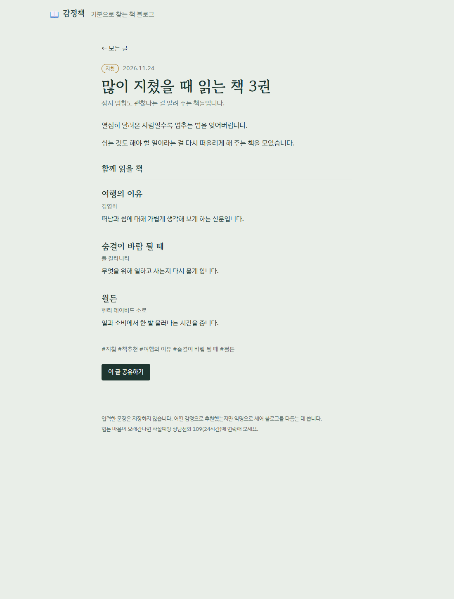

3결과 화면



AI PM 프로젝트 · 결과보고서
책 제목과 메모만 쓰면, 발행 준비는 AI가.
오늘 기분, 한 문장이면 맞는 책 이야기.
| 작성자 | ttottibabo |
|---|---|
| 작성일 | 2026-11-25 |
| 블로그 | https://ttottibabo.github.io/emotionbook/ |
| 관리자 | https://ttottibabo.github.io/emotionbook/admin.html (예시 모드: ?demo=1) |
| GitHub | https://github.com/ttottibabo/emotionbook |
| 사용 기술 | HTML·CSS·JS · Claude API (claude-opus-5-5) · Vercel Functions · Firebase (Firestore, Auth) · GitHub Pages |
* 직접 작성 시간(약 25분)은 추정치입니다. AI 3편·직접 3편을 비교하는 측정은 진행 예정입니다 (4장).
감정 기반 책 블로그 감정책에 Claude AI 기능 두 가지를 넣어, 운영자의 발행 과정과 독자의 글 찾기를 자동화했습니다.
| 대상 | AI 기능 | 자동화한 일 |
|---|---|---|
| 관리자(나) 핵심 대상 | AI 발행 도우미 | 책 제목·메모만 쓰면 Claude가 제목, 한 줄 요약, 감정 분류, 태그, 검색 설명, 본문 정리, 인스타 카드 문구 7가지를 한 번에 채움 → 확인·수정 후 발행 |
| 독자 | AI 글 찾기 | 기분 한 문장 → Claude가 문장 전체를 읽고 블로그 글 중에서만 맞는 글 3편과 이유를 추천 |
| 날짜 | 단계 | 결과 |
|---|---|---|
| 11-13 | 프로토타입 v4 | 같은 문장을 규칙과 AI로 비교 → 규칙 방식의 한계(부정문, 상황 문장) 발견 |
| 11-24 | v1.0 감정 추천 출시 | 규칙 방식 공개판, 운영자 지표 화면, 문서 체계(PRD·로그·테스트) |
| 11-25 | v2.0 블로그 + AI | 방문자·관리자 페이지, AI 발행 도우미, AI 글 찾기, 보안 규칙 |
| 11-25 | 연결과 검증 | Firebase 연결 → 중계 서버 Vercel 배포 → Claude 실제 연결 → 관리자 실제 발행 |
전체 과정은 GitHub 커밋 기록(14개)과 docs/WORKLOG.md에 남아 있습니다.
| # | 누가 | 문제 | 근거 |
|---|---|---|---|
| P1 | 관리자 | 메모는 금방 쓰지만 발행용 항목 6가지를 따로 쓰느라 한 편에 약 25분, 그래서 발행을 미룸 | 직접 작성 경험, 운영자 인터뷰 예정 |
| P2 | 독자 | "팀장한테 깨졌어"처럼 감정 단어 없이 상황만 말하면 맞는 글을 못 찾음 | v1.0 규칙 방식 테스트 K1~K3 실패 |
| P3 | 독자 | 힘든 순간에는 책보다 도움이 먼저 필요 | 안전 요구사항 |
AS-IS · 모두 직접, 약 25분
TO-BE · 목표 10분 이내 (50% 이상 단축)
| ID | 결정 | 이유 |
|---|---|---|
| D-001 | 위기 표현은 AI보다 먼저 규칙으로 | 안전 기능은 결과가 매번 같아야 하고 AI 오류에도 동작해야 함 |
| D-008·014 | 키는 중계 서버에만 (Vercel) | GitHub Pages는 코드가 공개라 키를 넣을 수 없음. 새 가입 없이 GitHub 로그인으로 배포 |
| D-009 | 독자 문장은 AI에 보내되 저장 안 함 | 상황 문장을 읽으려면 문장 전체가 필요. 대신 저장하지 않고 화면에 고지 |
| D-010 | AI 결과는 사람 확인 후 발행 | AI가 메모에 없는 내용을 지어낼 위험. 글의 주인은 운영자 |
| D-011 | AI 실패 시 규칙 방식으로 | 크레딧 소진·서버 장애가 블로그 장애가 되지 않게 |

| 구분 | 방법 | 결과 |
|---|---|---|
| 단위 테스트 | 감정 인식, 위기 검사, 글 고르기, AI 답 검증, 지표 집계 (tests/run.html) | ✅ 55/55 |
| 화면 테스트 | 방문자 13 + 관리자 7 시나리오를 실제로 조작, XSS 차단 포함 (tests/ui.html) | ✅ 20/20 |
| 중계 서버 | 다른 사이트 403, 위기 문장은 AI 호출 없음, 요청 제한, 관리자 확인 (tests/server.html) | ✅ 13/13 |
| 보안 규칙 | 배포 사이트에서 비로그인 상태로 읽기·쓰기 6가지 실제 요청 | ✅ 6/6 |
| 실제 Claude | 규칙 방식이 못 읽던 문장 3개 | ✅ 3/3 |
| 관리자 실사용 | 로그인 → AI 채우기 → 발행 → 블로그 표시 | ✅ 1/1 |
| 독자 문장 | 규칙 방식 (v1.0) | Claude (v2.0) |
|---|---|---|
| 팀장한테 깨졌어 | 감정 못 찾음 | 분노 · "한 번 혼난 일이 당신의 전부를 말해 주지는 않아요." |
| 이제 불안하지 않아 | 불안 (잘못 읽음) | 행복 · 지금의 평온함에 맞는 글 |
| 시험 망쳐서 엄마한테 미안해 | 감정 못 찾음 | 후회 · "후회가 남을 때 읽는 책 3권" |
관리자 도우미는 "외사랑"이 책이 아니라 노래 제목이라는 메모를 그대로 반영해, 메모에 없는 줄거리를 지어내지 않았습니다. 응답 시간은 독자 추천 약 5초로 목표(10초) 안입니다.
| 가설 | 목표 | 현재 |
|---|---|---|
| H1. AI 도우미가 작성 시간을 줄인다 | 50% 이상 단축 | AI 글 1편 53초 · 직접 작성과의 비교 측정 예정 (AI 3편 / 직접 3편) |
| H3. AI가 상황 문장도 읽는다 | 못 찾음 5% 이하 | 알려진 실패 문장 3/3 해결 · 실사용 데이터 수집 중 |
| H4. AI 추천이 더 도움이 된다 | 👍 70%, AI ≥ 규칙 | 지표 탭에서 방식별 만족도를 자동 집계하도록 구현 |
| 시도 | 결과 | 배운 점 |
|---|---|---|
| 프로토타입 AI 탭을 그대로 공개 | ❌ | claude.ai 안에서만 동작했다. 배포 환경에서 무엇이 동작하는지 처음부터 확인해야 한다. |
| 첫 화면 예시 문장 자동 테스트 | ❌→✅ | "요즘 너무 지쳤어"가 실패했다. 사용자가 가장 먼저 누를 버튼부터 테스트해야 한다. |
| AI 키를 브라우저에서 바로 사용 검토 | 채택 안 함 | 공개 코드에 키를 넣으면 누구나 쓸 수 있다. 중계 서버로 분리했다. |
| Firebase 연결 후 화면 테스트 | ❌→✅ | 외부 서비스를 기다리느라 첫 화면이 멈췄다. 화면은 먼저 띄우고 데이터는 나중에 덧붙인다. |
| 스크린샷으로 화면 점검 | ✅ | 라벨 줄바꿈, 로그인 전 탭 노출, 버튼 잘림을 자동 테스트가 아닌 눈으로 찾았다. |
| Claude API 키를 채팅에 공유 | ⚠️ | 키는 비밀번호와 같다. 서비스 설정 화면에만 넣고, 과제 후 재발급한다. |
| 항목 | 계획 |
|---|---|
| 작성 시간 비교 (H1) | 리뷰 6편(AI 3 / 직접 3)을 써서 지표 탭의 "줄어든 시간"으로 검증 |
| 사용자 검증 | 설문(운영자 10명·독자 30명)과 지인 10명 베타 테스트 |
| 상용화 | 비공개 저장소와 실제 서비스용 Firebase로 분리, 관리자 Google 로그인 (멘토 피드백) |
| 비용 | 크레딧 사용량 주 1회 확인, 필요하면 모델을 claude-haiku-5-5로 전환 (설정 한 줄) |
| 배포된 블로그 | https://ttottibabo.github.io/emotionbook/ |
| GitHub | https://github.com/ttottibabo/emotionbook |
| PRD · 테스트 보고서 | docs/PRD.md · docs/TEST_REPORT.md (각 2쪽, 버전 기록 포함) |
| 지침 · 로그 | docs/AGENT_GUIDE.md · docs/DECISION_LOG.md · docs/SUCCESS_FAILURE_LOG.md · docs/WORKLOG.md |